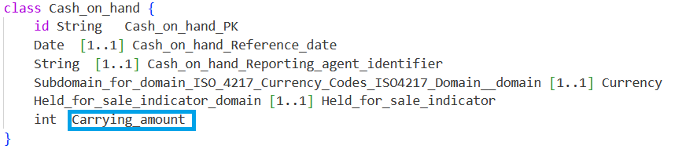
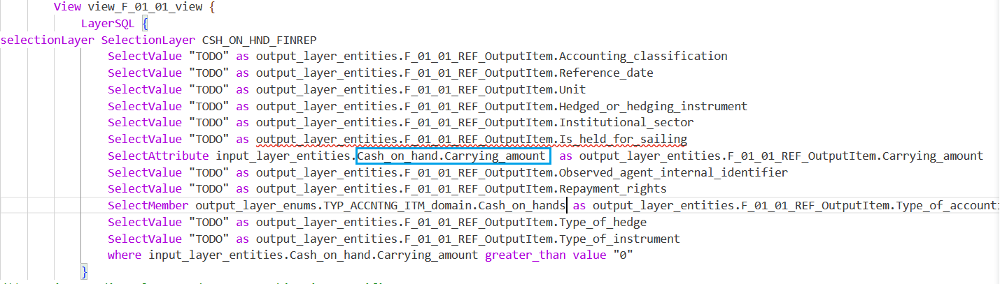

Ecore4Reg
Eclipse Free BIRD Tools introduces Ecore4Reg as an open standard for regulatory experts to easily describe and collaborate on machine readable requirements documents without programming experience.
ECore4Reg extends a simple subset of Ecore with a means of defining business friendly logic for financial and prudential reporting. This allows datamodels and regulatory logic to be defined together in the same format and tools instead of constantly switching between tools, and manually keeping data models and transformations in synch.
ECore4Reg is compatible with the artefacts published by BIRD for data models and transformations
ECore4Reg is an open standard
The initial ECore4Reg specification is available at the Github Wiki
We plan to add soon links also to Regulatory text within tools support
Ecore4Reg For Regulatory Subject Matter Experts
Ecore4Reg allows SME's' to navigate bird data models, and allows SMEs to write transformation logic which links to the data model.
Tools provide code complete, and automatic validation as the SME types.
SME's can change the data model and immediately see which transformation rules are affected.
Ecore4Reg always autogenerates full Ecore (with standard defaults) for the data model part, and that can be used in the many open-source tools available for Ecore.
It is always possible to translate from full Ecore to Ecore4Reg also.
Note in the examples below that the regulatory logic file is referencing the data model file (see blue box) and had autocomplete to help the SME find it. Note that if we reference something that is not (or is no loner) in the data model then this will be highlighted as a validation error with red underline..


Ecore4Reg for Technical users and tool providers
Ecore4Reg is specified as set of UML class diagrams, authored using Ecore.
Technical users or tool providers can interact with Ecore4Reg using a Java or Python API, in essence working with a neat API for objects which match Java or Python classes for each of the UML classes
Creating Ecore4Reg Tools
The UML model can be used to create software to build tool support for the standard such as
- Text editors for the file formats with auto-completion
- Auto-creation of diagrams from the text formats
- Visual and textual navigation of the artefacts
The link between text and UML model
Ecore4Reg can be strored as XML or JSON or we can associate a grammar.
As a very technical note, there is a grammar associated with the text file formats of Ecore4Reg.
For the datamodeling part we associate the grammar of existing Eclipse Xcore which is semantically equivalent to Ecore
For the regulatory transformations/logic part we associate with a greatly cut down version of the familiar SQL language
The UML model is complete enough to store the items of the abstract tree of any text file written which follows that grammar.
We indicate how a file in the grammar can be translated to and from an object tree made of objects which are instances of the classes in the UML diagram.
The UML Class diagrams and their documentation
{kind=link}
{kind=link}
{kind=link}
{kind=link}